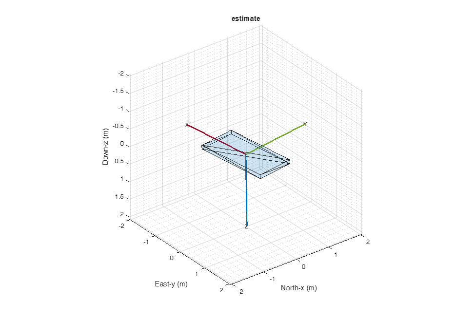
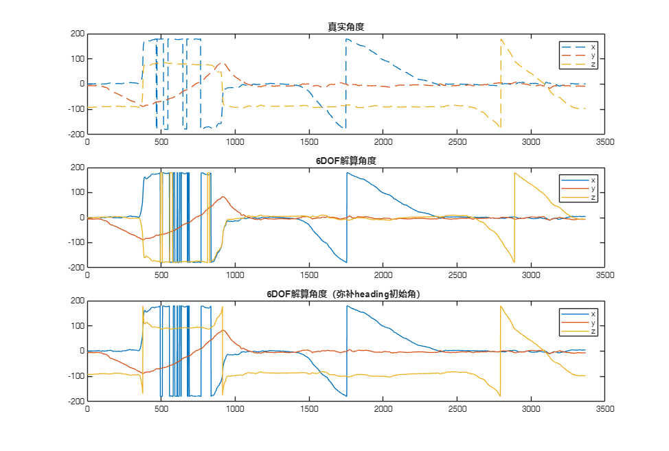

6DOF姿态解算
使用手机6dof数据做仿真，姿态角解算，姿态模拟,验证了6DOF数据可以得到Roll / Pitch / Tilt 角度，无法得到Yaw角度，即imufilter默认解算出来的Yaw=0，可以通过磁力计得到Yaw角，初始Yaw可以弥补解算的角度以期恢复。
Contents
收集数据
在Matlab Mobile™ APP上开启角速度，加速度记录数据，对x,y,z分别旋转360度保存为本地mat文件。
matfile = 'data/sensorlog_20241008_093637.mat'; SampleRate = 100; % This must match the data rate of the phone. [Accelerometer, Gyroscope, Magnetometer, EulerAngles] ... = exampleHelperProcessPhoneData(matfile); % 手机Matlab % Mobile坐标系转换为NED坐标系，参考EstimateIPhoneOrientationUsingSensorFusionExample.mlx Accelerometer = -[Accelerometer(:,2), Accelerometer(:,1), -Accelerometer(:,3)]; Gyroscope = [Gyroscope(:,2), Gyroscope(:,1), -Gyroscope(:,3)]; % Accelerometer = [Accelerometer(:,1), Accelerometer(:,2), Accelerometer(:,3)]; % Gyroscope = [Gyroscope(:,1), Gyroscope(:,2), -Gyroscope(:,3)];
FUSE = imufilter('ReferenceFrame','NED',SampleRate=SampleRate); numSamples = size(Accelerometer,1); % qEstIMU = FUSE(Accelerometer,Gyroscope); reset(FUSE); qEs = zeros(numSamples,1,"quaternion"); initDeg = EulerAngles(1,:); initOrien = quaternion(initDeg,"eulerd","XYZ","frame"); figure pEstimate = poseplot(initOrien,"NED","MeshFileName", "phoneMesh.stl"); xlabel("North-x (m)") ylabel("East-y (m)") zlabel("Down-z (m)"); title("estimate") for i = 1:numSamples qEs(i) = FUSE(Accelerometer(i,:),Gyroscope(i,:)); set(pEstimate, "Orientation", qEs(i)*initOrien); drawnow end
eulerdeg = rad2deg(quat2eul(qEs,"XYZ")); eulerdeg(:,2) = -eulerdeg(:,2); figure; tiledlayout(3,1) nexttile; plot(EulerAngles,"--") legend(["x","y","z"]) title("真实角度") nexttile; plot(eulerdeg); legend(["x","y","z"]) title("6DOF解算角度") z = eulerdeg(:,3)+180; % 归一化到[0,360)范围 eulerdeg(:,3) = mod(z+initDeg(3),360)-180;% 重新还原到[-180,180)范围 nexttile; plot(eulerdeg); legend(["x","y","z"]) title("6DOF解算角度（弥补heading初始角）")